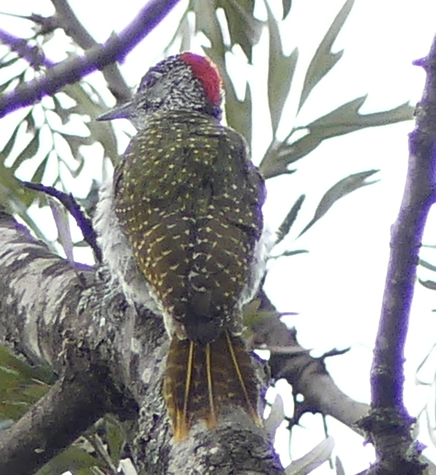
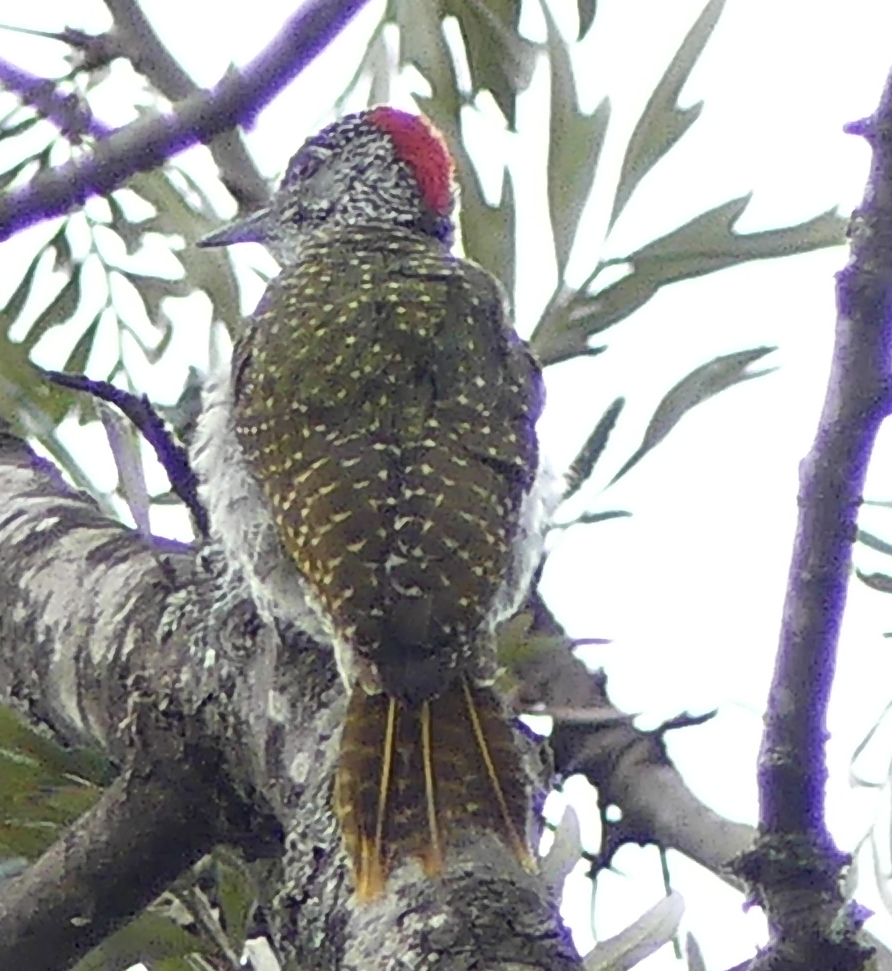

From: Brian Finch <birdfinch@gmail.com>
Date: 2019-06-01 14:36
Subject: GOLDEN-TAILED WOODPECKER MUKOMA ESTATE
Dear All,
I have just returned from a wonderful ten day Lark experience. The
afternoon before I left for this trip I clearly heard a Golden-tailed
Woodpecker in the garden but did not see it, and when reporting it
said that I hope it would stay until I got back. This is not only new
for the paddock, but the 485th species for the Pentad as before it was
neither photographed, seen nor sound recorded even though I was
convinced as to what it was.
A few days later it was heard in Simon Ball's garden, and he also did
not see it as well.
At 8.00am this morning I could hear a GTW next door, but by the time I
got outside it was still next door but moving away. This was going to
be the GTW that was never seen. It came back at 12.30pm, and I had
another go, it was extremely noisy, not just giving the sad wailing,
but some croaking notes in between short bouts of drumming. This
sounds no louder than the resident Brown-backed Woodpeckers, but
though larger bird, the beak is quite weak looking if compared to a
Nubian for instance. It moved out of the crotons where it was
invisible, into the Grevillea robusta trees where for a long time it
was still invisible. Finally it found an open branch on which to drum,
and I got some good video of it calling and drumming. Yay! I have
attached upper and underside of yay, the video is too digitally heavy
to download on the net.
The bird cried until after 2.00pm, and is obviously desperate for a
companion, it is probably one of East Africa's saddest sounding birds,
has anyone got a spare female GTW that they are not using at the
moment!
Best for now
Brian
 
